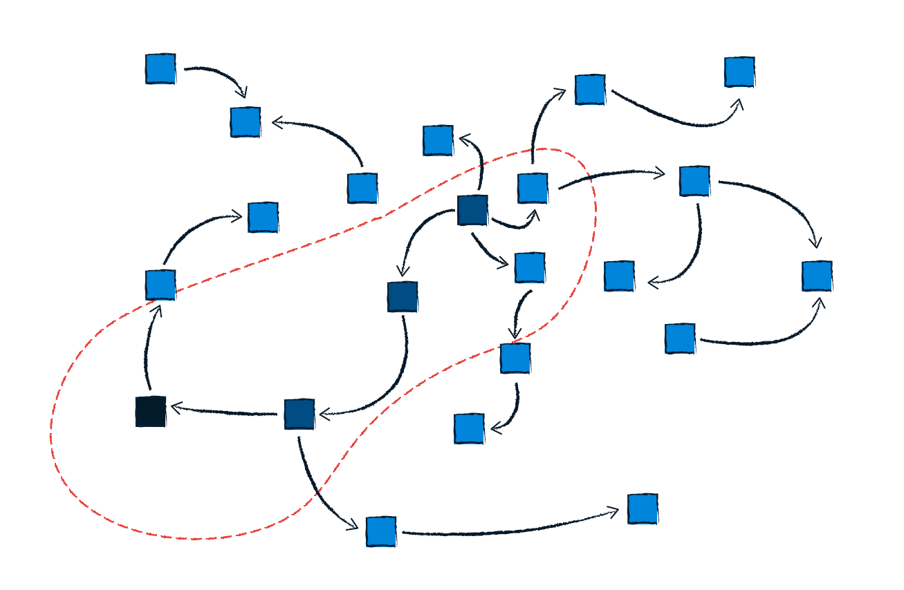
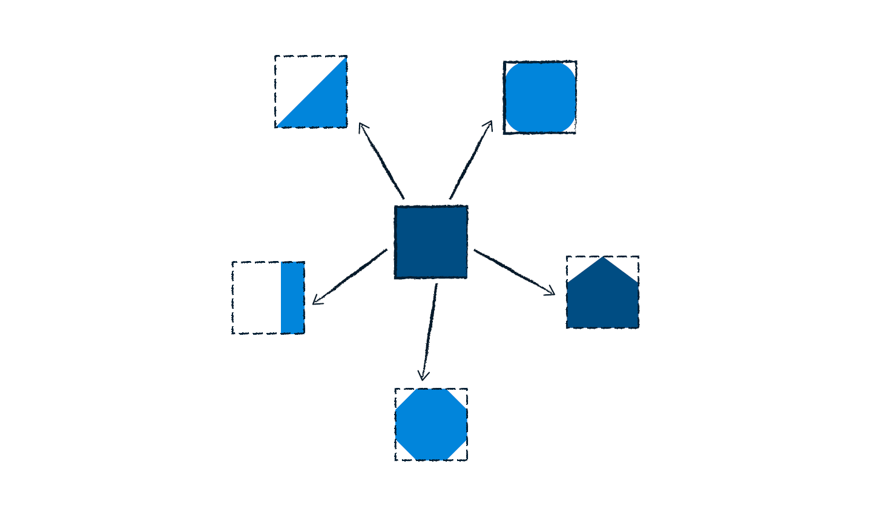
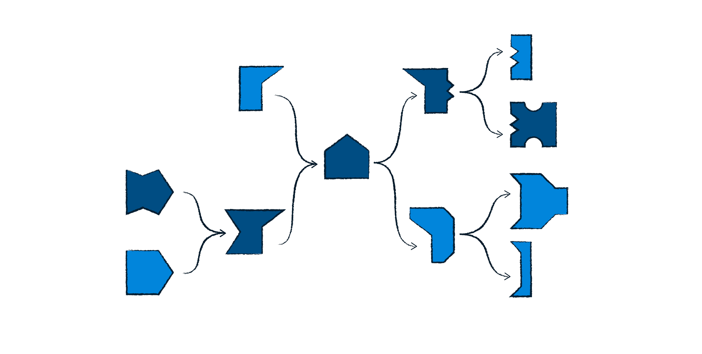
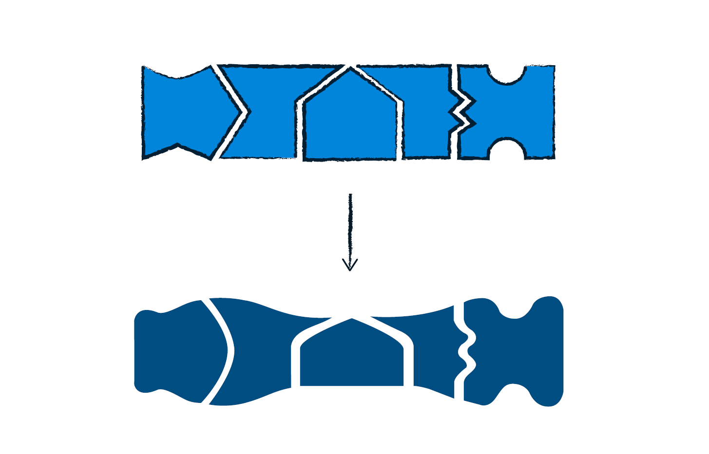

Exploded Process: An engineer’s insight into the design of Cardistry
I have been doing Cardistry for over eight years. What’s kept me going all this time is that fifty two cards and two hands offer an unlimited space for cardists to explore. Surprisingly, there is a lot of room for creativity in Cardistry. Exploded Process, which I wrote in 2018 (and available here), outlines the process for creating original flourishes in detail. Part I: Taste, or the evaluating function is about decomposing what separates good cardistry from boring cardistry. Part II: Process, or how we do what we do has four sub-chapters:
Ideation

Transformation

Evolution

Polish

This book is a project in collaboration with Cardistry Touch(https://www.cardistrytouch.com/). The inspiration for this book came from many sources, including a series of interviews, Hold my brain while I’m shuffling by Dimitri Arleri, the design process (which I’ve learned over my time at Olin), and a music theory class.
Exploded Process was revealed at Cardistry Con 2018, and will be released in December 2018.